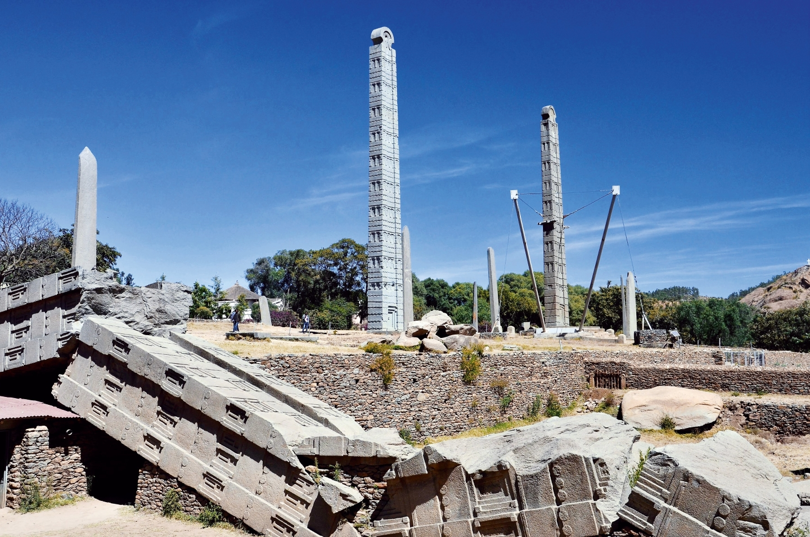
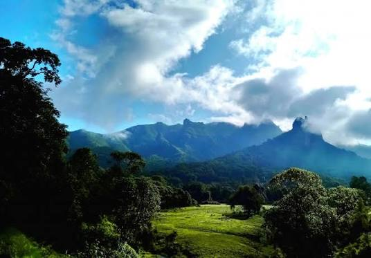

Ancient Egypt

Ancient Egypt was one of the longest-lasting civilizations in the world, best known for its massive pyramids, pharaohs, and stone temples along the Nile.
The Kingdom of Aksum

Located in the Horn of Africa, the Kingdom of Aksum was a major trading empire famous for its towering carved stone obelisks and powerful rulers.
The Royal City of Gondar

Often called the Camelot of Africa, Gondar is famous for its walled royal enclosure, 17th-century castles, and the history of Ethiopian emperors.
The Roman Empire

At its peak, the Roman Empire shaped everything from modern law and government to road building and architecture across Europe, North Africa, and the Middle East.
Bale Mountains

Explore the beautiful highlands of Ethiopia, known for their wildlife, forests, and unique mountain landscapes.
Cape Town
Discover Cape Town, a famous South African city known for Table Mountain, its coastline, and rich cultural history.
Manchester United

Learn about the history of Manchester United, one of the most famous football clubs in England.
Siberia
Explore Siberia, a vast region of northern Asia known for its forests, lakes, and cold climate.
Quick Comparison
| Historical Place | Country | Famous For |
|---|---|---|
| Giza Pyramids | Egypt | Ancient pyramids and tombs |
| Gondar | Ethiopia | 17th-century royal castles |
| Aksum | Ethiopia | Giant stone obelisks |
| Colosseum | Italy | Roman amphitheater |
Plan Your Trip
Want to see these places in person? Check out our expedition page to start mapping out your trip.